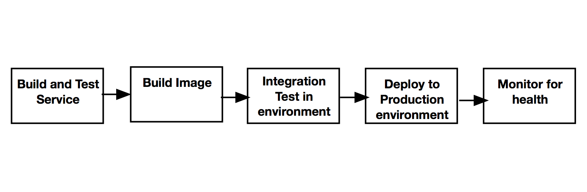
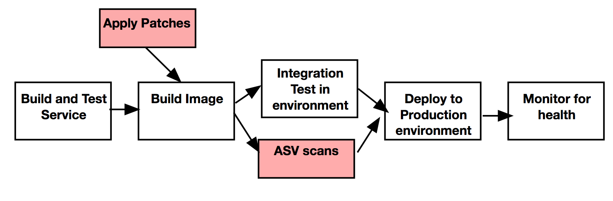
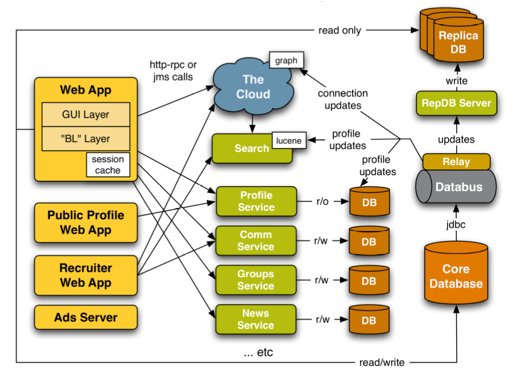

Securing Microservices
Owen Cliffe, 2016
Why give this talk?
What is secure?
Security (from PCI-DSS 3.0)
- Build and maintain a secure network
- Protect (cardholder) data
- Manage vulnerabilities
- Write secure software
- Patching
- Implement strong access control measures
- Monitor and test security systems
- Maintain an information security policy
Monolithic Architectures


- Slow rate of change in software architecture
- 1-2 databases
- Static networking
- Small internal external attack surface
- Good platform support (i.e. JEE, Spring Security, Shiro, PicketLink HDIV etc. )
Microservice Architecures
- Complex architecture
- New stuff every week
- Many data stores
- Dynamic networking
- No standardised support
Securing your networking
Attack Surface


Connection-level security
- Dynamic network polices (e.g. AWS SecGroups)
- Service placement & Physical boundaries (e.g. docker)
- SSL with mututal authentication
Authentication
- For third parties (users/API consumers) - OAuth (2)
- Between services of your application
- For user actions between services
Deep authentication


- Portable & transitive security assertions
- Scoped by request/cause rather than link
- Software needs to receive tokens and pass them down
- AOP-style wrapping patterns work well(e.g. Spring interceptors)
- Async code (e.g. node, RX) is harder
Using shared sessions
- Session ID == Bearer token
- Like web sessions e.g. spring session
- Securing the session service (esp Redis)
- Additional latency to fetch session data
- Easy to manage revocation
Json Web Tokens (RFC7519)
eyJhbGciOiJIUzI1NiIsInR5cCI6IkpXVCJ9.
eyJzdWIiOiIxMjM0NTY3ODkwIiwibmFtZSI6IkpvaG4gRG9lIiwiYWRtaW4iOnRydWV9.
TJVA95OrM7E2cBab30RMHrHDcEfxjoYZgeFONFh7HgQ
{
"alg": "HS256",
"typ": "JWT"
}
{
"jti" : "123141215",
"sub": "userid:231231",
"aud" : "http://my-domain.com/internal",
"nbf" : "2016-01-01T11:59:00,000Z",
"exp" : "2016-01-01T12:30:00,000Z",
"name": "John Doe",
"admin": true,
"urn:app1:permissions" : ["SEE_STUFF", "DO_STUFF"]
}
base64(<signature>)
Using cryptographic claims
- Need to manage token expiry durations - no revocation
- Shared Keys:
- Difficult to strongly secure (all same) without HSM
- PKI signatures:
- 1 signer & private key (at boundary) many verifiers
- RSA2048 signature (440 bytes)
- Signature and verification time :5ms/1ms
- Consider ECDSA (smaller & faster but less support)
- May be public Oauth2 Bearer tokens
- Renewal and long-running processes
Expiry bounds
- Build time into architecture:
- "fast" : 180s (e.g. API calls)
- "medium" : 5400s (e.g. replication, redirect protocols (3DS, paypal))
- "slow" : 86400s+ (e.g. reconciliation, batch)
Access Control
- Common language - e.g. subject/verb/object , URIs
- Embed in claim (e.g. Oauth Scope)
- Per service, just share principal ID
- Use shared config/policy store
Data Security

- Separate & isolate secure data behind services
- Exploit service boundaries to secure data
- Strong, fine-grained acccess control
Vulnerability Management
Patching & Scanning: Integrating security with delivery


- Patching as software change
- Integrate security testing in pipeline
- Integrate functional testing with security patches
Building secure software
Software rot and complexity


Monitor systems
Audit Log Pattern


- Align with REST
- Log at boundaries (in and out)
- Correlate using transitive trace IDs
Reporting and documentation


- make it automatic
- document services in-line (e.g. swagger)
Making it all work
NASA Safety Culture
- Reporting Culture - Report frequently without fear
- Just Culture - Treat people fairly
- Flexible Culture - Change and adapt to meet new demands
- Learning Culture - Learn from successes and failures
- Engaged Culture - Everybody doing their part
In summary
- (Much) more complex than monolithic
- Few tools to help you out
- Consistency and good patterns important
- Can get easier if you do it right
- Can lead to more secure systems